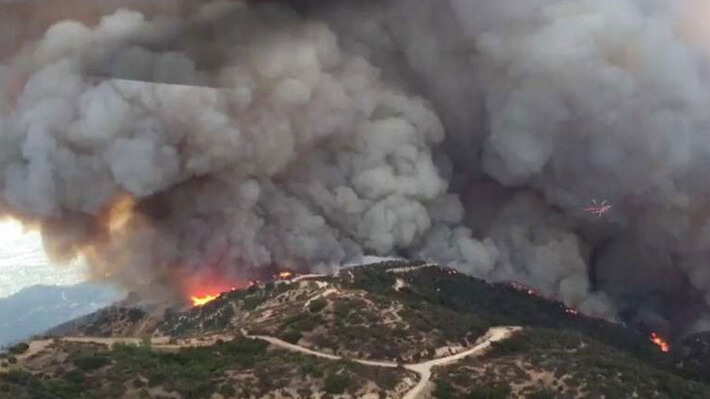
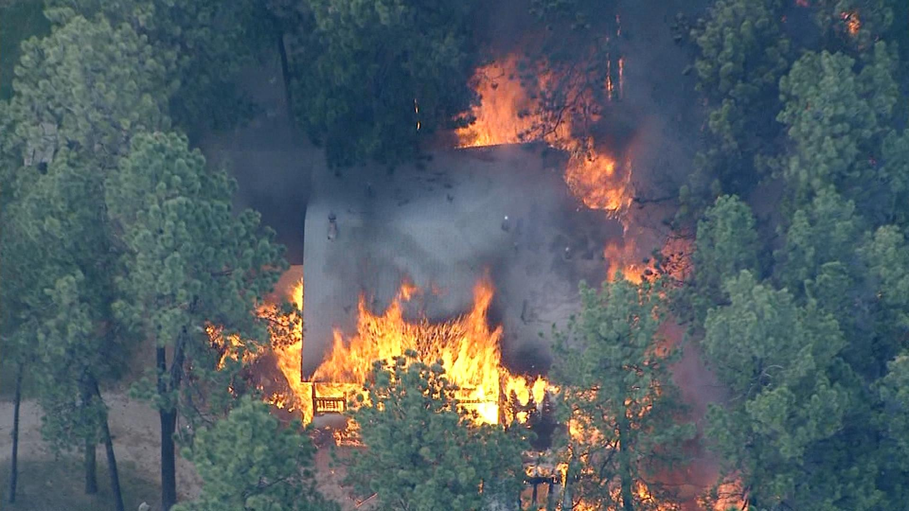

(a) Fire on mountain

(b) House fire

(c) Forest fire
By Matiss M. Mednis, Nathan Loh, and Nikolaus Schultze
Wildfires threaten ecosystems and humanity, spreading rapidly and causing significant damage. The recent Canadian wildfires highlight their global impact.
Prevention and early detection are crucial to reducing the risk of uncontrollable fires.
Implementing automated monitoring methods such as infrared cameras are affordable and accessible,
offering the potential for early detection when fires are still manageable.
Today's wildfire detection faces many challenges, as natural events like clouds, mists,
and sunsets may mimic or distort wildfire characteristics and lead to false positives.
Alternative approaches, such as satellite or infrared monitoring, provide benefits, with images covering larger areas and bypassing minor weather effects.
As such, developing accurate models for early detection can significantly aid in preserving ecosystems, properties, and lives.
The data set, The Wildfire Dataset, is comprised of 2,700 aerial and ground-based images from various sources, including government databases, Flickr, and Unsplash. These images cover various environmental conditions, forest types, geographical locations, and the intricate dynamics of forest ecosystems and fire events. The main directories can be found in this data set: Training (70%), Validation (15%), and Testing (15%). In addition, two folders can be found for each directory: “nofire” folders containing 1653 images without fire and “fire” folders containing 1047 images with fire. The data set also includes images of smoke with and without fire to improve the model.
An issue with finding data for this project is the need for available images of wildfires, as they do not often occur.
We introduce this problem by implementing a second data set, FIRE Dataset, composed of fire images.
This way, we can test if our model will improve after adding additional images of fire and whether our original model can accurately classify these images.
This new data set consists of images of fire and no fire, however, we will only implement the images with fire.
Images of fire can be found in all environments like a forest and a house.
In this project, we utilize and compare CNN architectures, Hugging Face's ViT model, and a hybrid CNN and transformer architecture to approach wildfire detection in RGB images on the wildfire dataset. We collect and compare all models' accuracy, F1, recall, and precision metrics. For the ViT and hybrid models, we additionally train them on additional fire dataset images and analyze their final performance on the test set with that additional data in training.
The Simple CNN model comprises three convolutional layers, each followed by max-pooling, effectively capturing hierarchical features from the input images. The model contains ReLU activations in the fully connected layers, including a sigmoid activation in the output layer, and is fine-tuned with the Adam optimizer using binary cross entropy as the loss function.
The Complex CNN model contains four convolutional layers with progressive max-pooling, incorporating ReLU activations in its fully connected layers. It introduces dropout layers (50% and 30% dropout rates) for regularization, with a sigmoid activation in the output layer. The model is optimized using the Adam optimizer with binary cross entropy as the loss function.
The pre-trained CNN model seamlessly utilizes a pre-trained VGG16 with 'imagenet' weights. Allowing the pre-trained layers to remain fixed, a flattened layer connects to a dense layer comprising 128 units with a ReLU activation. The final layer, which tailors the model for binary classification, contains a sigmoid activation—optimized with the Adam optimizer.
The ViT model utilized in this project is derived from Google's Hugging Face ViT-base-path16-224 model. It is pre-trained on ImageNet-21k at a resolution of 224x224. The images used to train are rescaled and transformed accordingly, with different sizes included in the hypertuning section to optimize performance. Twelve images encoded as RGBA (4 channels) were removed due to incompatible data types. Other sets of models are created to incorporate the additional fire images. Each model is trained with 4 epochs, with the evaluation of the validation set every 50 steps.
The hybrid model is comprised of a CNN and a transformer. This design differs from the ViT model by incorporating a more complex CNN layer, following a similar structure to the Convolutional vision Transformer (CvT) architecture. The components of this structure are a pre-trained CNN model called EfficientNetB0 and a basic transformer architecture based around a ViT. The transformer section is incorporated with patches of 32 by 32 pixels to capture local features, and multi-head attention to capture the complex relationships between distant image regions. A binary cross-entropy loss function is used as the data set consists of two target classes. A Learning rate scheduler is added to update the learning rate as it trains, allowing the feature weights to converge smoothly. Additional models were developed to accommodate separate datasets, allowing for an evaluation of the effectiveness of training with expanded image sets or testing on new data.
This section shows the appropriate tables and graphs for the metrics of the models on the test set. Confusion matrices are also included to visualize the effectiveness of the models on different the different testing sets.
| Number of Epochs | 20 | 40 |
| Accuracy | 77.56% | 84.63% |
| Precision | 84.00% | 84.00% |
| Recall | 78.00% | 92.00% |
| F1-Score | 81.00% | 88.00% |
| Number of Epochs | 20 | 100 |
| Accuracy | 79.51% | 86.34% |
| Precision | 79.00% | 85.00% |
| Recall | 91.00% | 94.00% |
| F1-Score | 84.00% | 89.00% |
| Number of Epochs | 3 | 20 |
| Accuracy | 86.34% | 88.54% |
| Precision | 93.00% | 90.00% |
| Recall | 84.00% | 92.00% |
| F1-Score | 88.00% | 91.00% |
| Training Set | Original Data (Wildfire) | Mixed Data (Fire and Wildfire) |
| Accuracy | 97.06% | 96.32% |
| Precision | 97.09% | 96.35% |
| Recall | 97.06% | 96.32% |
| F1-Score | 97.07% | 96.33% |
| Training Set | Original Data | Original Data | Original Data | Mixed Data |
| Testing Set | Original Data | Mixed Data | New Data | Original Data |
| Number of Epochs | 40 | 40 | 40 | 20 |
| Accuracy | 95.61% | 83.68% | 78.78% | 95.37% |
| Precision | 96.29% | 83.40% | 75.57% | 96.11% |
| Recall | 94.57% | 86.63% | 83.88% | 94.26% |
| F1-Score | 95.30% | 83.26% | 76.20% | 95.03% |
| Metric | Simple CNN | Complex CNN | Pre-trained CNN | Vision Transformer (ViT) | Hybrid CNN+Transformer |
|---|---|---|---|---|---|
| Accuracy | 84.63% | 86.34% | 88.54% | 97.06% | 95.61% |
| Precision | 84.00% | 85.00% | 90.00% | 97.09% | 96.29% |
| Recall | 92.00% | 94.00% | 92.00% | 97.06% | 94.57% |
| F1-Score | 88.00% | 89.00% | 91.00% | 97.07% | 95.30% |
For a full report of the project, refer to the following pdf link: Wildfire Final Report.